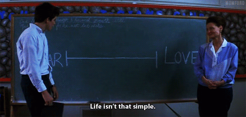
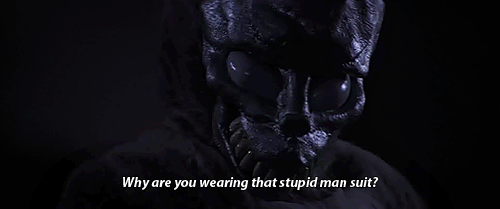
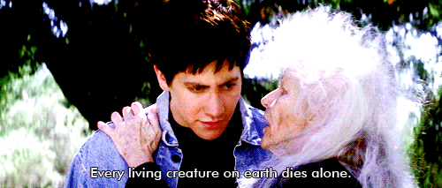
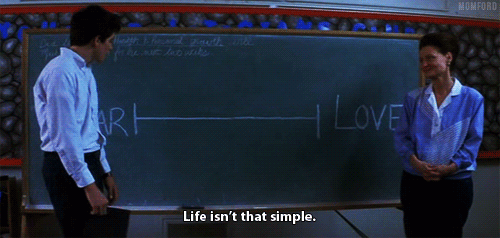
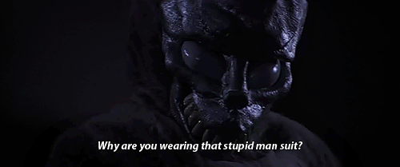
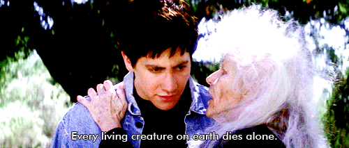
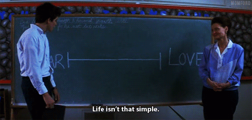
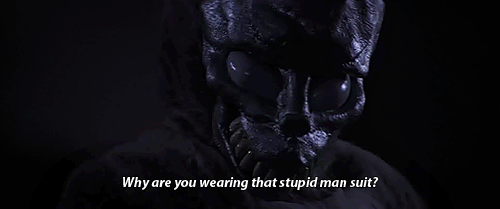
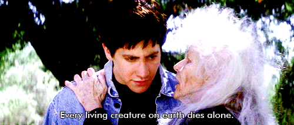
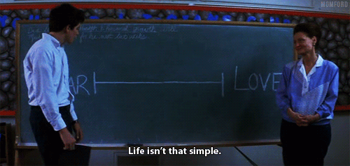
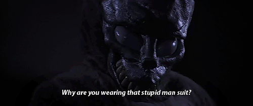
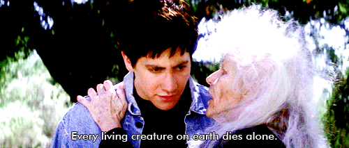
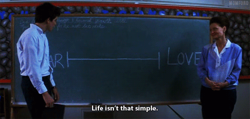
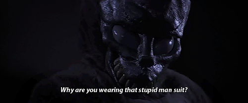
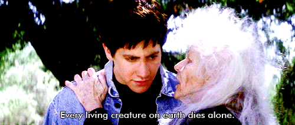
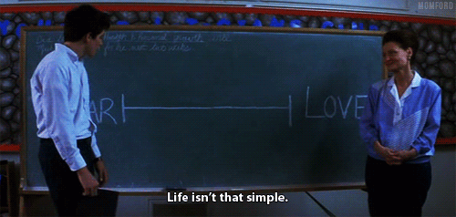
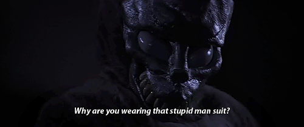
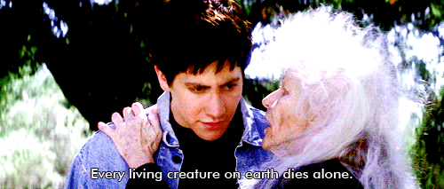
| Actor | Character |
|---|---|
| Jake Gyllenhaal | Donald "Donnie" Darko |
| Drew Barrymore | Karen Pomeroy |
| Mary McDonnell | Rose Darko |
| Holmes Osborne | Eddie Darko |
| Maggie Gyllenhaal | Elizabeth Darko |
| Jena Malone | Gretchen Ross |
| James Duval | Frank |
| Patrick Swayze | Jim Cuningham |
| Noah Wyle | Prof. Keneth Monitoff |
| Daveigh Chase | Samantha Darko |
| Actor | Character |
|---|---|
| Ashley Tisdale | Kim |
| Arthur Taxier | Dr. Fisher |
| Mark Hoffman | Policial |
| David St. James | Bob Garland |
| Jazzie Mahannah | Joanie James |
| Jolene Purdy | Cherita Chen |
| Stuart Stone | Ronald Fisher |
| Gary Lundy | Sean Smith |
| Alex Greenwald | Seth Devlin |
| Seth Rogen | Ricky Danforth |
The time "28:06:42:12", indicating how the long the world had left in the movie, was created by adding or subtracting one from each of these numbers: 27:07:43:11, the precise length of one lunar cycle. (So, now “The Killing Moon” song choice makes sense!)
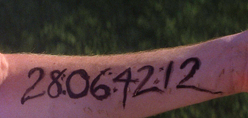Which, as it happens, is the exact same length of time that passes during the film's narrative (from the jet engine landing in Donnie's bedroom to the final scene, which ends the same way). But Kelly insists the 28-day theme was pure coincidence.
Playing the role of high school bully Ricky Danforth, this was Seth Rogen’s first movie appearance -meaning his first ever line on the silver screen was “
I like your boobs.”
Like Rogen, Donnie Darko was also the first big-screen appearance for Ashley Tisdale. She was so unrecognizable in her role as the dorky teen Kim, that I had to do a double-take. Sharpay wouldn't approve of that look and bad hair day, I'm sure.
The Director of Donnie Darko Richard Kelly grew up in Midlothian, Virginia, which was the town he referred to in the original script. This was later changed to Middlesex.
Working with a small budget, composer Michael Andrews tried (and failed) to get the rights to U2’s ‘MLK’ for the final scene in the movie. Instead, he got his friend Gary Jules to record a cover of the Tears for Fears song ‘Mad World’. It was released as a single and reached the top of the UK charts, earning the title of Christmas number one in 2003.
After securing Jake Gyllenhaal for the role, Director Richard Kelly was initially hesitant towards casting his sister Maggie for the role of Elizabeth Darko. But, after being convinced by the scene of her drinking urine in the movie Cecil B. DeMented, he quickly realised he wouldn’t have to work hard at creating a sibling rivalry on screen between the two skilled actors.
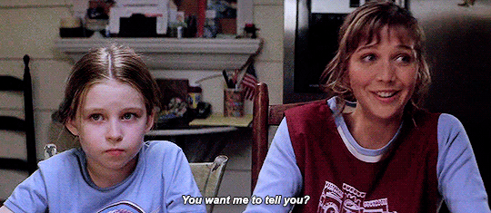In the hit 1987 comedy “Ferris Bueller’s Day Off”, his home was filmed at 4160 Country Club Drive, Long Beach, California, just a couple of streets away from where the jet engine falls into Donnie’s bedroom.
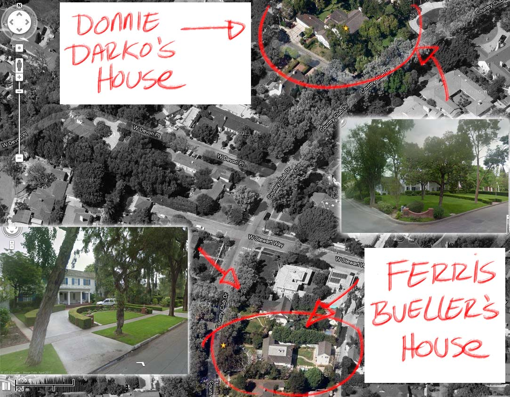The original poster art for the movie had an Arabic-style font. This was changed to a more common typeface for the video release because of the 9/11 terrorist attacks.
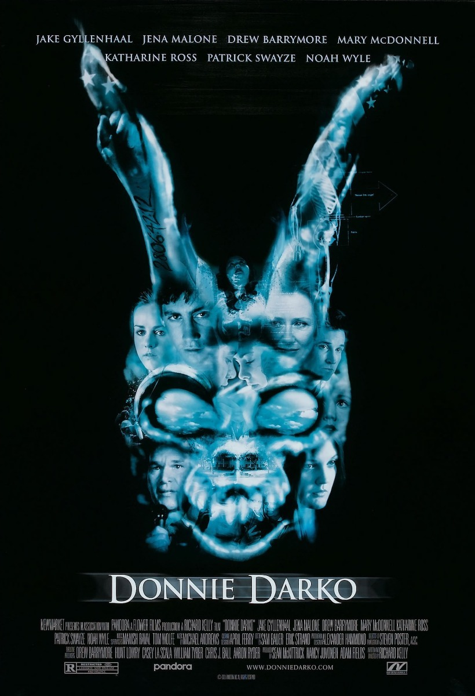The Philosophy of Time Travel is a difficult book to read, mainly as it’s imaginary. But much of the text from the book – written by the fictional Grandma Death – is now available on the film’s website, DVD and has been incorporated into the director’s cut. Happy reading!
In 2009, Daveigh Chase reprised her role as Donnie's sister, Samantha Darko, in S. Darko—a poorly reviewed sequel that was made without Kelly’s involvement. In 2005, Kelly made it clear that he would never shoot a sequel to Donnie Darko because it would “destroy its integrity.”